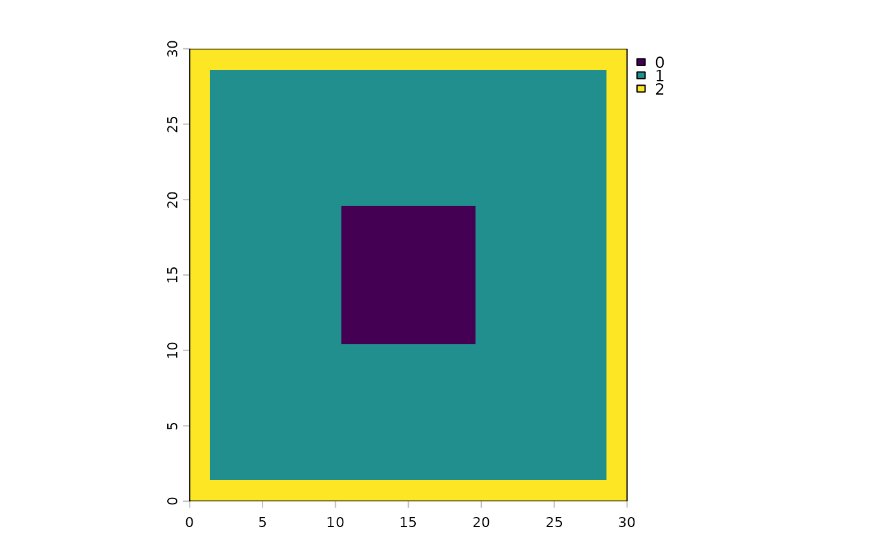

Returns a fine-resolution mask showing which cells are affected by boundary effects in [disagg_bl()] / [disagg_cub()] output. Useful for masking out unreliable regions in boundary-sensitive applications, or for inspecting the affected zone before processing.
Usage
edge_effects(coarse, fact, method = c("bilinear", "cubic"), radius = NULL)Arguments
- coarse
SpatRaster; the coarse input that would be passed to [disagg_bl()] or [disagg_cub()]. Only its geometry is used.
- fact
Integer disagg factor (>= 2).
- method
One of `"bilinear"` or `"cubic"`. Must match the method you intend to use.
- radius
Pre-sharpening kernel radius. If `NULL`, the default for the method is used (matches [disagg_bl()] / [disagg_cub()] defaults). For accurate masks, pass the same value you would pass to the disagg function.
Value
A single-layer fine-resolution SpatRaster with integer values 0, 1, or 2. Same geometry as the output of `disagg_*(coarse, fact)`. Attributes `method`, `radius`, and `interp_reach` are attached for inspection.
Details
Edge effects come from two sources, encoded as values 0, 1, 2:
`0`: Interior cells with no edge effects. Mass preservation and interpolation accuracy are both at full precision here.
`1`: Cells where the pre-sharpening focal pass used reflective extension (directly or via the interpolation kernell reaching into the reflected band). Mass preservation is slightly degraded but interpolation is full-order.
`2`: Cells additionally affected by terra's interpolation boundary handling, where the cubic or bilinear kernel would extend outside the raster and terra falls back to a lower-order scheme. This is a narrow band within ~0.5 coarse-cell-widths of the edge for bilinear, ~1.5 for cubic.
The bands shrink to nothing in the interior, so for large rasters the bulk of the output is `0`. For small rasters, the bands may overlap and cover most or all of the output; the function still returns a sensible mask in that case.
Examples
library(terra)
coarse <- rast(matrix(runif(30 * 30), 30, 30))
# See where edge effects would land for a fact=5 cubic disagg
m <- edge_effects(coarse, fact = 5, method = "cubic")
plot(m)

# Use the mask to drop edge-affected cells from a disagg result
fine <- disagg_cub(coarse, fact = 5)
fine_clean <- mask(fine, m, maskvalues = c(1, 2))